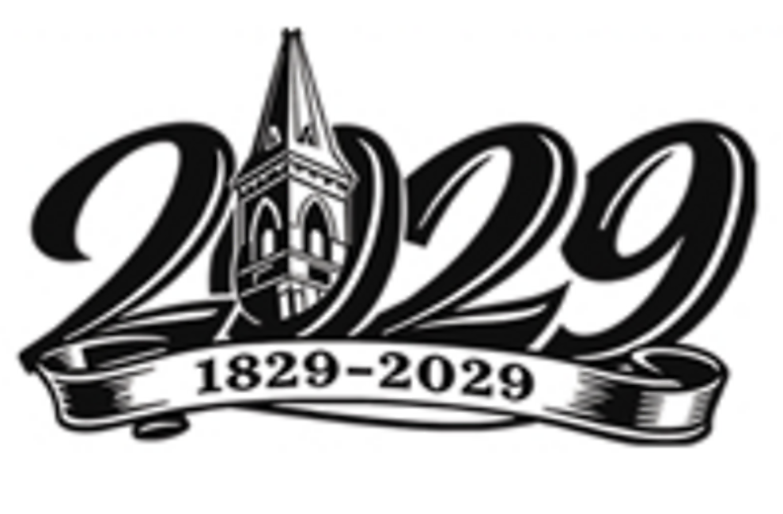

Letters from leadership
Two letters were written for this campaign and are reproduced here in full, without abridgement.
The first is the appeal of the elders, deacons, and Revitalization 2029 committee. The second is from the church’s pastor. Douglas USA LLC Fundraising wrote and set these letters for print at the direction of their signatories; the words below are the church’s own.
Honoring Our Past, Preparing For The Future
From the elders, deacons, and “Revitalization 2029” committee of Main Street Presbyterian Church. Printed inside the campaign’s introductory insert.

Dear Church Family,
Since 1829, Main Street Presbyterian Church (MSPC) has served as our spiritual home for families, a place of comfort in sorrow, a place of joy in celebration, and a place where the Word of God has been and continues to be proclaimed and lived. As the elders, deacons, and “Revitalization 2029” committee of Main Street Presbyterian Church, we come together with one voice of gratitude, faith, and hope as we reflect on nearly 200 years of God’s sustaining grace.
For generations, this congregation has gathered here in worship, prayer, learning, service, and fellowship. As we approach our 200th anniversary in 2029, we recognize both a meaningful opportunity and a sacred responsibility before us. We offer this appeal in a spirit of unity, with a shared commitment to the ministry entrusted to us.
Our MSPC facilities now require significant renewal. We are undertaking a $1.8 million renovation campaign to create new welcome and gathering areas, and revitalize our sanctuary, ministry and office spaces, Bateman and Villee Buildings, roof, lighting, flooring, restrooms, signage, audio and video systems, heating and cooling, and other essential areas.
These Improvements Matter Because They Enable Our Ministry
This plan reflects careful study, prayerful review, and a desire to pursue the most effective path forward for our facilities and ministry. The enclosed campaign materials provide additional detail about the proposed improvements, the financial goal, and the ways members and friends may participate.
Our “Revitalization 2029” is not about luxury. It is about worshiping with reverence, welcoming guests with warmth, teaching with effectiveness, gathering in fellowship, caring for one another, reaching out to those in need, and preparing for future growth. Those who came before us gave, sacrificed, prayed, and served so that we could inherit this church building and its faithful witness. Now, together, it is our time to care for what has been entrusted to us and further enhance it for those who will come after us.
We ask every member and friend of Main Street Presbyterian Church to prayerfully consider how God may be calling each of us to participate. Some will be able to make leadership gifts. Some will give through pledges over time. Some will give in memory or honor of loved ones. Some will participate through smaller but equally meaningful gifts. Every gracious gift matters, and every act of support strengthens the whole body of the church. As you review the “Revitalization 2029” renovation campaign materials, pray over your response and embrace this faithful work. Together, we can honor the past, strengthen the present, and prepare Main Street Presbyterian Church to serve faithfully for generations to come.
With gratitude, hope, and united purpose,
The elders, deacons, & “Revitalization 2029” committee of Main Street Presbyterian Church
“Now the goal of our instruction is love that comes from a pure heart, a good conscience, and a sincere faith.”
From the Pastor
Pastor Aaron Suber, Main Street Presbyterian Church. Printed inside the Villee Building insert.
“This building is not the church. The church is God’s people.”
Dear Main Street Church Family,
Every Lord’s Day, something remarkable happens. Our congregation gathers to do what Christians have done for centuries. We come to hear the Word of God faithfully preached. We lift our voices together in praise. We pray for one another. We confess our sins and rejoice in the grace of Christ. We baptize our covenant children. We gather around the Lord’s Table. Week after week, God meets His people through the ordinary means of grace, strengthening His church and extending His kingdom.
These are ordinary moments that have eternal consequences. As your pastor, I have often reflected on the privilege of standing in our sanctuary and looking across generations of God’s people. I see children who are learning the faith. I see young families being established in Christ. I see saints who have worshiped here faithfully for decades. I remember funerals where we have grieved together with hope, baptisms where we have celebrated God’s covenant blessings, and countless Lord’s Days where Christ has faithfully nourished His people through His Word. This building is not the church. The church is God’s people. Yet this place has faithfully served that people for generations, providing a home where the gospel is proclaimed, disciples are formed, and Christ is worshiped.
That is why stewardship of these facilities matters. Those who came before us invested in this church long before we ever arrived. They gave sacrificially, maintained these buildings faithfully, and prepared a place where we would one day gather to worship. Their faithfulness became a blessing to us. Now the same privilege has been entrusted to our generation.
The work before us is about far more than renovations. It is about preserving and strengthening a place where God’s people can continue to worship Him with reverence, where visitors can be warmly welcomed, where children can be taught the Scriptures, and where future generations will hear the good news of Jesus Christ. We cannot know all that God will accomplish through this congregation in the years ahead. We do know, however, that every Lord’s Day faithfully offered to Him matters. Every child who grows up hearing the gospel matters. Every family strengthened by His Word matters. Every soul that comes to know Christ through the ministry of this church matters. These are eternal realities.
As you prayerfully consider your part in this campaign, I encourage you to see your participation as an act of stewardship and worship. We have been entrusted with a rich inheritance. By God’s grace, may we prove faithful stewards of that inheritance so that those who come after us will find this church still proclaiming the unchanging gospel, still gathering for reverent worship, and still serving Christ with joy. Thank you for your faithful love for Main Street Presbyterian Church. It is one of the greatest privileges of my life to serve as your pastor. I look forward with confidence to all that the Lord will continue to do among us for His glory.
My prayer is that two hundred years from now, another generation will gather in this place to hear the same gospel, sing the same praises, and worship the same faithful God.
In Christ,
Pastor Aaron Suber
Main Street Presbyterian Church · Celebrating 200 Years of Faith, Fellowship, and Service
Pray over your response, and embrace this faithful work.
A pledge may be recorded online, returned by mail, or handed to Henry Pilkinton or Danny Williams at the church.